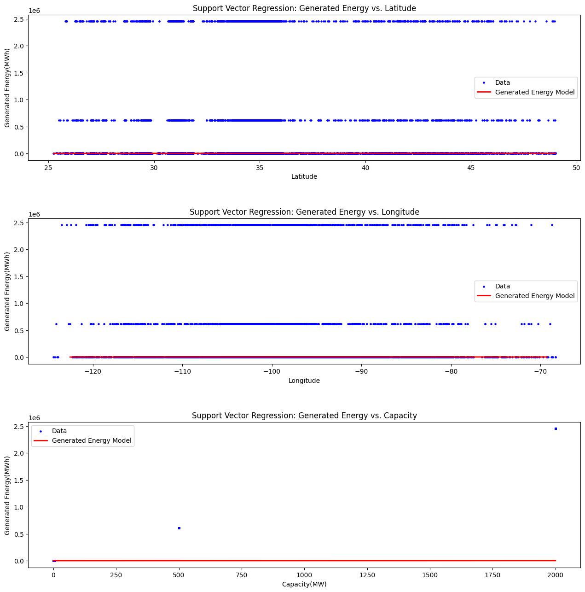
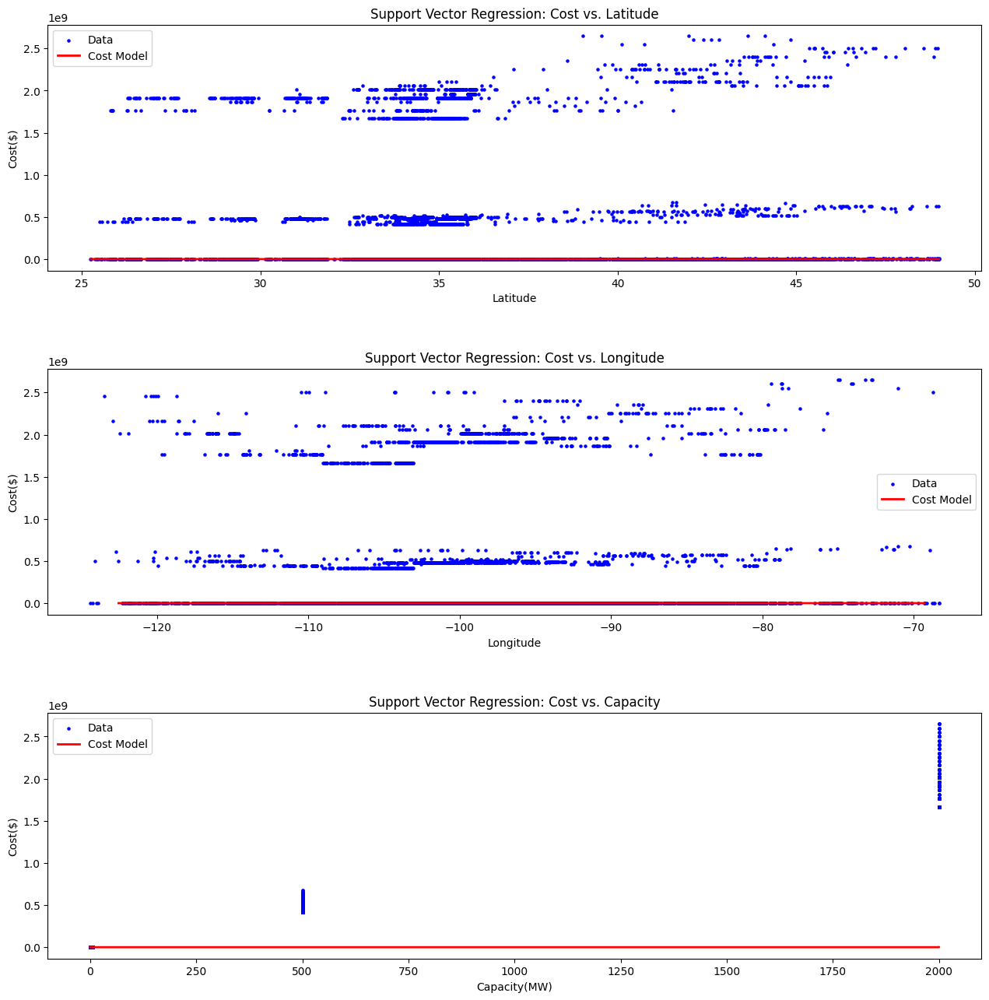

import pandas as pd
import numpy as np
import matplotlib.pyplot as plt
from matplotlib.legend_handler import HandlerLine2D
import sklearn.metrics as metrics
from sklearn.model_selection import cross_validate, KFold
from sklearn import svm
from sklearn.preprocessing import StandardScalerSupport Vector Regression Process and Analysis for Wind Data
Imports
In [1]:
Data Preprocessing
First, we read in the dataset.
In [2]:
df = pd.read_csv("../data/solar.csv")
df.head(5)| id | lat | long | state | farm_type | irradiance | lcoe | capacity | capacity_factor | array_area | available_solar_resource | generated_energy | cost | |
|---|---|---|---|---|---|---|---|---|---|---|---|---|---|
| 0 | 0 | 25.896492 | -97.460358 | Texas | large_community | 5.634079 | 39 | 5.00 | 0.235 | 90633.862770 | 21.276596 | 6132.00 | 4782960.0 |
| 1 | 1 | 26.032654 | -97.738098 | Texas | small_utility | 5.616413 | 39 | 5.00 | 0.234 | 91307.484990 | 21.367521 | 6132.00 | 4782960.0 |
| 2 | 2 | 26.059063 | -97.208252 | Texas | small_community | 5.746738 | 39 | 0.15 | 0.239 | 2621.097459 | 0.627615 | 183.96 | 143488.8 |
| 3 | 3 | 26.078449 | -98.073364 | Texas | small_utility | 5.742196 | 39 | 5.00 | 0.239 | 87439.036330 | 20.920502 | 6132.00 | 4782960.0 |
| 4 | 4 | 26.143227 | -98.311340 | Texas | small_utility | 5.817187 | 39 | 5.00 | 0.242 | 85241.850210 | 20.661157 | 6132.00 | 4782960.0 |
Now, we must shuffle the datasets to reduce bias.
In [3]:
df = df.sample(frac=1)
df.head(5)| id | lat | long | state | farm_type | irradiance | lcoe | capacity | capacity_factor | array_area | available_solar_resource | generated_energy | cost | |
|---|---|---|---|---|---|---|---|---|---|---|---|---|---|
| 10549 | 10549 | 43.146587 | -93.410431 | Iowa | small_residential | 4.739488 | 45 | 0.005 | 0.197 | 128.523807 | 0.025381 | 6.132 | 5518.80 |
| 4229 | 4229 | 32.752232 | -116.028137 | California | small_utility | 6.851059 | 41 | 5.000 | 0.285 | 61458.036490 | 17.543860 | 6132.000 | 5028240.00 |
| 4414 | 4414 | 35.003220 | -101.967285 | Texas | large_community | 6.262835 | 39 | 5.000 | 0.261 | 73412.458260 | 19.157088 | 6132.000 | 4782960.00 |
| 10478 | 10478 | 42.722588 | -101.106384 | Nebraska | large_community | 5.437910 | 43 | 5.000 | 0.227 | 97212.780910 | 22.026432 | 6132.000 | 5273520.00 |
| 8767 | 8767 | 35.880466 | -99.368011 | Oklahoma | medium_residential | 5.918760 | 41 | 0.010 | 0.247 | 164.166121 | 0.040486 | 12.264 | 10056.48 |
Looking at each dataset, we can identify which variables we want to use for our models.
In [5]:
X = df.loc[:, ['lat','long','capacity']]
y_energy = df['generated_energy'].values
y_cost = df['cost'].valuesNow we split into training and testing sets, reserving about 80% for training and 20% for testing.
In [6]:
X_train = X[:9500]
X_test = X[9500:]
y_energy_train = y_energy[:9500]
y_energy_test = y_energy[9500:]
y_cost_train = y_cost[:9500]
y_cost_test = y_cost[9500:]Models typically perform better when input values are within a certain range, like [-1, 1] for example. We scale the data points appropriately.
In [7]:
scaler = StandardScaler()
scaler.fit(X_train)
X_train = scaler.transform(X_train)
X_test = scaler.transform(X_test)
X_trainarray([[ 2.03229033, 0.92873139, -0.43905719],
[-0.5962383 , -1.96682005, -0.43098755],
[-0.02700756, -0.16672944, -0.43098755],
...,
[-0.12947216, -0.24196866, -0.43905719],
[ 2.41359832, 0.38433555, -0.43904104],
[-0.0831422 , 0.65286873, -0.43098755]])Training the Models
Now that the data is pre-processed accordingly, the models can be trained and fit.
In [8]:
energy_reg = svm.SVR()
cost_reg = svm.SVR()
energy_reg.fit(X_train, y_energy_train)
cost_reg.fit(X_train, y_cost_train)SVR()In a Jupyter environment, please rerun this cell to show the HTML representation or trust the notebook.
On GitHub, the HTML representation is unable to render, please try loading this page with nbviewer.org.
SVR()
With a trained model, predictions can now be made.
In [10]:
energy_display = y_energy_test
cost_display = y_cost_test
energy_preds = energy_reg.predict(X_test)
cost_preds = cost_reg.predict(X_test)
print("Predictions")
print("----------------------")
for i in range(3):
print(f"predicted energy: {energy_preds[i]:.2f}\tactual energy: {energy_display[i]:.2f}\tpredicted cost: {cost_preds[i]:.2f}\tactual cost: {cost_display[i]:.2f}")Predictions
----------------------
predicted energy: 2494.27 actual energy: 6.13 predicted cost: 1913464.63 actual cost: 4905.60
predicted energy: 2438.26 actual energy: 2452.80 predicted cost: 1913207.65 actual cost: 1913184.00
predicted energy: 2753.60 actual energy: 183.96 predicted cost: 1913890.42 actual cost: 172922.40Testing and Analyzing the Models
This section contains metrics gathering and other figures that visualize the models and its results.
Metrics
Scores and Error Values
The score being recored are the R2 score, Root Mean Squared Error (RMSE), and Mean Absolute Percentage Error (MAPE).
In [11]:
energy_r2 = metrics.r2_score(y_energy_test, energy_preds, multioutput="raw_values")
energy_rmse = metrics.root_mean_squared_error(y_energy_test, energy_preds, multioutput="raw_values")
energy_mape = metrics.mean_absolute_percentage_error(y_energy_test, energy_preds, multioutput="raw_values")
cost_r2 = metrics.r2_score(y_cost_test, cost_preds, multioutput="raw_values")
cost_rmse = metrics.root_mean_squared_error(y_cost_test, cost_preds, multioutput="raw_values")
cost_mape = metrics.mean_absolute_percentage_error(y_cost_test, cost_preds, multioutput="raw_values")
print("Metric\tScore")
print("-----------------------")
print(f"energy_r2\t{energy_r2}\ncost_r2\t{cost_r2}\nenergy_rmse\t{energy_rmse}\ncost_rmse\t{cost_rmse}\nenergy_mape\t{energy_mape}\ncost_mape\t{cost_mape}")Metric Score
-----------------------
energy_r2 [-0.21012622]
cost_r2 [-0.20850399]
energy_rmse [880927.68663408]
cost_rmse [6.87646055e+08]
energy_mape [81.95543371]
cost_mape [81.30935189]K-Fold Cross Validation
This cross validation splits up the dataset into 10 unique folds, which are then used to test a model. The model is then scored using the same metrics outlined above: R2, RMSE, MAPE. This ensures the scoring is rigorous, and the entire dataset is used.
In [12]:
kf = KFold(n_splits=10, random_state=0, shuffle=True)
kf_cv_scores = cross_validate(energy_reg, X, y_energy, cv=kf, scoring={"r2":metrics.make_scorer(score_func=metrics.r2_score),
"rmse":metrics.make_scorer(score_func=metrics.root_mean_squared_error),
"mape":metrics.make_scorer(score_func=metrics.mean_absolute_percentage_error)})
kf_cv_df = pd.DataFrame.from_dict(kf_cv_scores)
means = kf_cv_df.mean()
print("10-Fold Cross Validation Scores")
print("----------------------------------------------------")
print(f"R2 Average: {means.iloc[2]}")
print(f"RMSE Average: {means.iloc[3]}")
print(f"MAPE Average: {means.iloc[4]}")
kf_cv_df10-Fold Cross Validation Scores
----------------------------------------------------
R2 Average: -0.19080402178052483
RMSE Average: 835719.6572480934
MAPE Average: 83.11834411696152| fit_time | score_time | test_r2 | test_rmse | test_mape | |
|---|---|---|---|---|---|
| 0 | 5.711730 | 1.212786 | -0.209988 | 858270.866365 | 77.702522 |
| 1 | 3.275041 | 1.064659 | -0.175722 | 825723.536395 | 84.581029 |
| 2 | 3.531009 | 1.017413 | -0.196909 | 829640.908412 | 78.586396 |
| 3 | 3.094635 | 0.965153 | -0.190046 | 798942.604556 | 84.428920 |
| 4 | 3.407629 | 1.058627 | -0.200488 | 874252.589933 | 87.739410 |
| 5 | 3.160279 | 0.958006 | -0.192127 | 847512.024413 | 81.573179 |
| 6 | 3.356327 | 0.942312 | -0.196893 | 867838.629564 | 80.135358 |
| 7 | 3.356798 | 0.907112 | -0.171115 | 804687.181740 | 87.416628 |
| 8 | 3.331655 | 0.908973 | -0.201225 | 850576.101493 | 82.517218 |
| 9 | 3.200842 | 0.976853 | -0.173528 | 799752.129609 | 86.502780 |
In [13]:
kf = KFold(n_splits=10, random_state=0, shuffle=True)
kf_cv_scores = cross_validate(cost_reg, X, y_cost, cv=kf, scoring={"r2":metrics.make_scorer(score_func=metrics.r2_score),
"rmse":metrics.make_scorer(score_func=metrics.root_mean_squared_error),
"mape":metrics.make_scorer(score_func=metrics.mean_absolute_percentage_error)})
kf_cv_df = pd.DataFrame.from_dict(kf_cv_scores)
means = kf_cv_df.mean()
print("10-Fold Cross Validation Scores")
print("----------------------------------------------------")
print(f"R2 Average: {means.iloc[2]}")
print(f"RMSE Average: {means.iloc[3]}")
print(f"MAPE Average: {means.iloc[4]}")
kf_cv_df10-Fold Cross Validation Scores
----------------------------------------------------
R2 Average: -0.19100059475135955
RMSE Average: 657874231.9115219
MAPE Average: 83.9877821694812| fit_time | score_time | test_r2 | test_rmse | test_mape | |
|---|---|---|---|---|---|
| 0 | 3.926678 | 0.935226 | -0.208953 | 6.800997e+08 | 78.355280 |
| 1 | 3.605959 | 0.954635 | -0.176153 | 6.491585e+08 | 86.265737 |
| 2 | 3.739908 | 1.006299 | -0.195172 | 6.610066e+08 | 78.606084 |
| 3 | 3.506410 | 0.996119 | -0.190897 | 6.284168e+08 | 84.443426 |
| 4 | 3.706270 | 0.962898 | -0.200360 | 6.923436e+08 | 88.103419 |
| 5 | 3.648341 | 0.965594 | -0.192996 | 6.650218e+08 | 82.503671 |
| 6 | 3.819171 | 0.977612 | -0.196144 | 6.854944e+08 | 81.365376 |
| 7 | 3.566598 | 0.932271 | -0.172927 | 6.276688e+08 | 88.890206 |
| 8 | 3.490718 | 0.985235 | -0.200951 | 6.666649e+08 | 83.557596 |
| 9 | 3.594051 | 0.949818 | -0.175453 | 6.228673e+08 | 87.787026 |
Graphs
Graphs of the SVR model fits on each on the input features, for each target.
In [18]:
plot_lat_x = X[9500:].loc[:,['lat']].sort_values(by=['lat'])
plot_long_x = X[9500:].loc[:,['long']].sort_values(by=['long'])
plot_cap_x = X[9500:].loc[:,['capacity']].sort_values(by=['capacity'])
plot_energy_y = pd.DataFrame(energy_preds).loc[:,[0]].sort_values(by=[0])
figure, axis = plt.subplots(3)
figure.set_size_inches(15,15)
axis[0].scatter(X.loc[:,["lat"]], y_energy, color='blue', label='Data', s=5)
axis[0].plot(plot_lat_x, plot_energy_y, color='red',lw=2, label="Generated Energy Model")
axis[0].set_xlabel("Latitude")
axis[0].set_ylabel("Generated Energy(MWh)")
axis[0].set_title("Support Vector Regression: Generated Energy vs. Latitude")
axis[0].legend()
axis[1].scatter(X.loc[:,["long"]], y_energy, color='blue', label='Data', s=5)
axis[1].plot(plot_long_x, plot_energy_y, color='red',lw=2, label="Generated Energy Model")
axis[1].set_xlabel("Longitude")
axis[1].set_ylabel("Generated Energy(MWh)")
axis[1].set_title("Support Vector Regression: Generated Energy vs. Longitude")
axis[1].legend()
axis[2].scatter(X.loc[:,["capacity"]], y_energy, color='blue', label='Data', s=5)
axis[2].plot(plot_cap_x, plot_energy_y, color='red',lw=2, label="Generated Energy Model")
axis[2].set_xlabel("Capacity(MW)")
axis[2].set_ylabel("Generated Energy(MWh)")
axis[2].set_title("Support Vector Regression: Generated Energy vs. Capacity")
axis[2].legend()
plt.subplots_adjust(left=0.1,
bottom=0.1,
right=0.9,
top=0.9,
wspace=.4,
hspace=.4)
plt.show()

In [19]:
plot_cost_y = pd.DataFrame(cost_preds).loc[:,[0]].sort_values(by=[0])
figure, axis = plt.subplots(3)
figure.set_size_inches(15,15)
axis[0].scatter(X.loc[:,["lat"]], y_cost, color='blue', label='Data', s=5)
axis[0].plot(plot_lat_x, plot_cost_y, color='red',lw=2, label="Cost Model")
axis[0].set_xlabel("Latitude")
axis[0].set_ylabel("Cost($)")
axis[0].set_title("Support Vector Regression: Cost vs. Latitude")
axis[0].legend()
axis[1].scatter(X.loc[:,["long"]], y_cost, color='blue', label='Data', s=5)
axis[1].plot(plot_long_x, plot_cost_y, color='red',lw=2, label="Cost Model")
axis[1].set_xlabel("Longitude")
axis[1].set_ylabel("Cost($)")
axis[1].set_title("Support Vector Regression: Cost vs. Longitude")
axis[1].legend()
axis[2].scatter(X.loc[:,["capacity"]], y_cost, color='blue', label='Data', s=5)
axis[2].plot(plot_cap_x, plot_cost_y, color='red',lw=2, label="Cost Model")
axis[2].set_xlabel("Capacity(MW)")
axis[2].set_ylabel("Cost($)")
axis[2].set_title("Support Vector Regression: Cost vs. Capacity")
axis[2].legend()
plt.subplots_adjust(left=0.1,
bottom=0.1,
right=0.9,
top=0.9,
wspace=.4,
hspace=.4)
plt.show()
